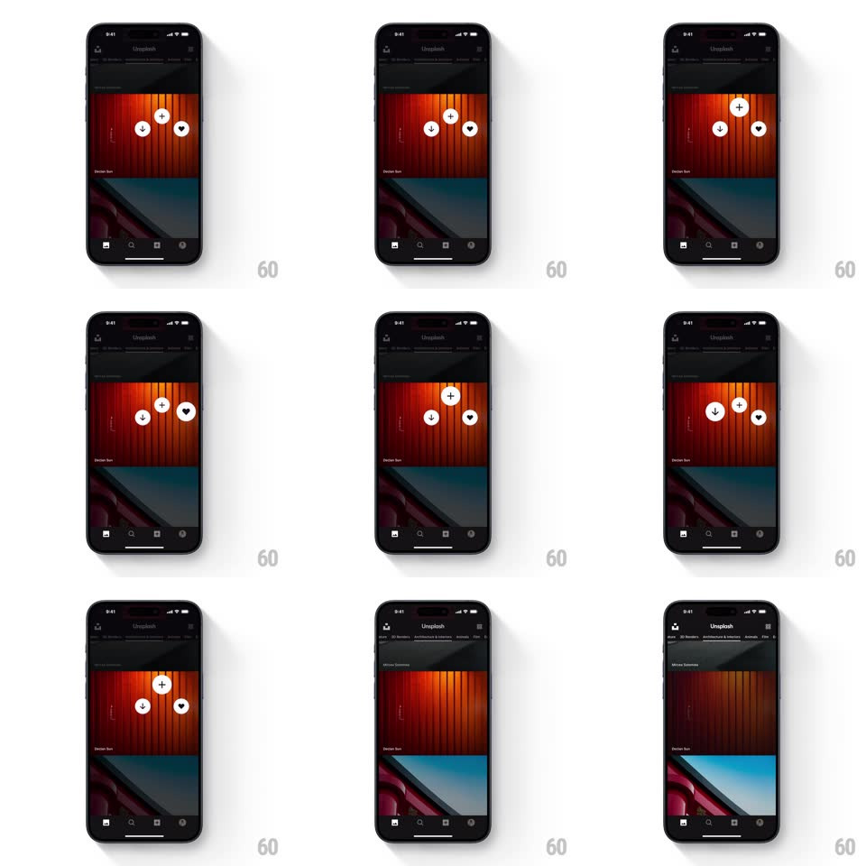

Media
Frame-by-frame

Rebuild this interaction 1:1: Unsplash's long-press quick actions - holding a photo card dims it and springs in a staggered trio of circular buttons (download, collect, like) that float over the image and bounce away on release.

Rebuild this interaction 1:1: Unsplash's long-press quick actions - holding a photo card dims it and springs in a staggered trio of circular buttons (download, collect, like) that float over the image and bounce away on release. ## Integration Integration: stack-agnostic spec - springs given as stiffness/damping, timed motions as duration + curve; map every value to your framework and animation library of choice. ## Scene The dark Unsplash feed (photo cards with author names, tab bar below). The long-pressed card (a red/orange wall photo) carries three white circular buttons over its center: download arrow, plus (collect), heart - arranged in a loose triangle. ## Motion spec Pattern: springy staggered action reveal. - Long-press (500ms hold): the card scales down a touch (1 -> 0.97) and dims (~35% black overlay fades in, 200ms). - The three buttons spring in staggered from the press point: each scales 0 -> 1 with an overshoot spring (~450/18), 60ms apart, order download -> collect -> heart, each also translating to its slot. - The buttons cast soft shadows and bob once as they land. - Slide the held finger onto a button and release: the button flashes (scale 1 -> 1.2 -> 1) and its action fires (download starts / collect sheet opens / heart fills red). - Release on empty space: the trio springs back out in reverse stagger (40ms apart, faster, no overshoot) and the card undims. ## Calibration - The trio stays centered on the original press point, not the card center. - Buttons are finger-sized (~44pt) with clear spacing - no accidental hits. ## Reduced motion Buttons fade in together; card dims without scaling. ## Don't miss - The reverse-stagger exit is quicker than the entrance - dismissing should feel effortless. - A light haptic tick fires when the hold triggers.